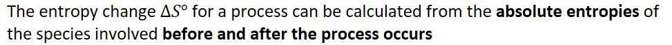
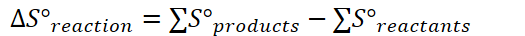

{width="10.135416666666666in" height="0.6875in"}
Absolute Entropy: an value, in joules per mole, that represents the entropy of a substance in its phase
Often measured on joules rather than kilojoules
Every substance has a nonzero value for absolute entropy
The number of moles of each substance must be considered from calculating entropy
{width="5.46875in" height="0.375in"}
If result is positive: entropy increases
If result is negative: entropy decreases
{width="1.8333333333333333in" height="0.4895833333333333in"}
Entropy is positive if solid -> liquid -> gas
Positive if number of moles increases from reactants to products
A positive entropy is thermodynamically favorable => matter will always want to be disorderly